Weka
Download from the Weka website, click “Download” on the left, and select one of the “Stable book 3rd ed.” versions for your machine.
You may need to increase the memory available to Weka. On Windows, check out Weka’s page on the topic. On a Mac, use this command in the Terminal:
java -Xmx4096m -jar /Applications/weka-3-6-8.app/Contents/Resources/Java/weka.jar
TOC
k-means clustering
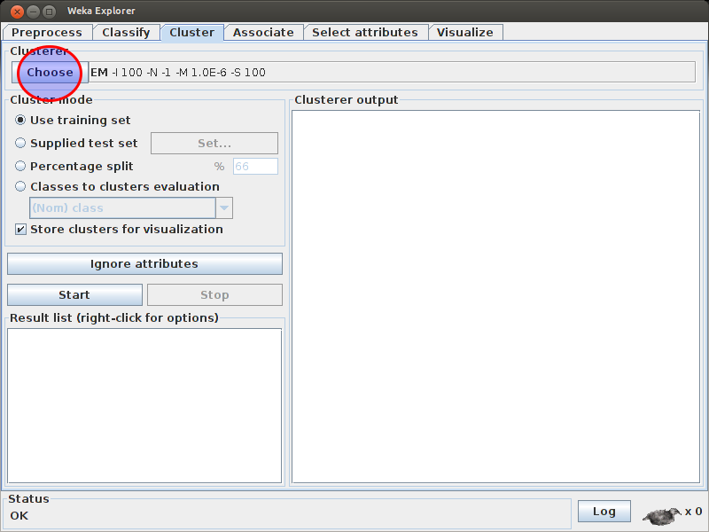
Click “Choose” to choose the clustering algorithm.
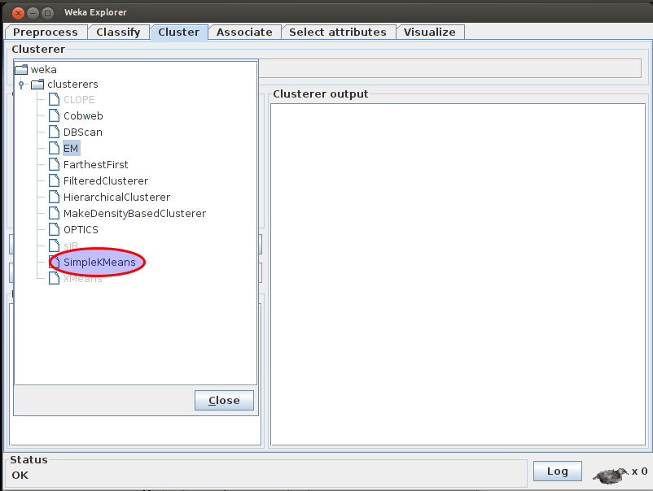
Choose “SimpleKMeans.”
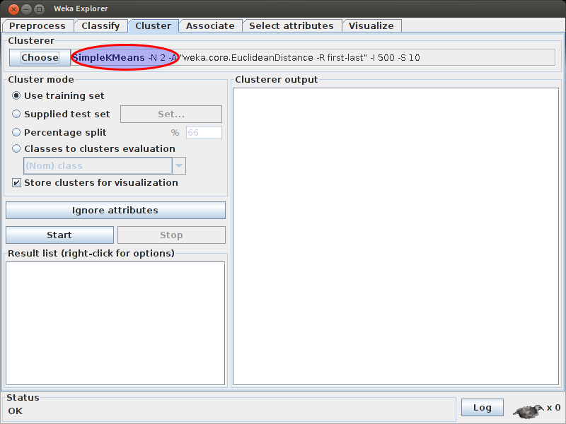
Click the name of the algorithm to get more options.
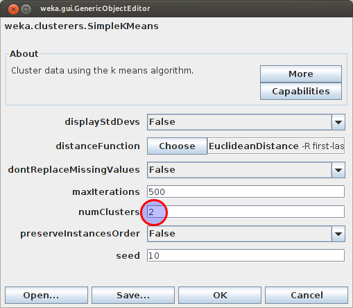
Possibly change the number of clusters or distance function.
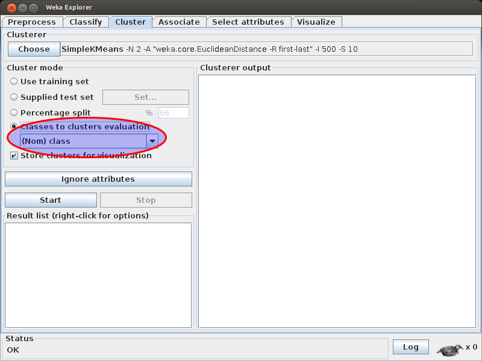
For evaluation (including the confusion matrix), choose Classes to clusters evaluation and make sure “(Nom) class” (nominal variable called “class”) is selected for comparison.
k-nearest neighbor classification
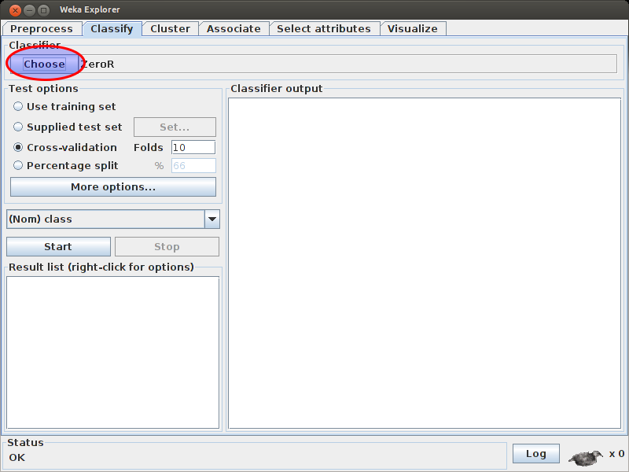
Click “Choose” to choose the classification algorithm.
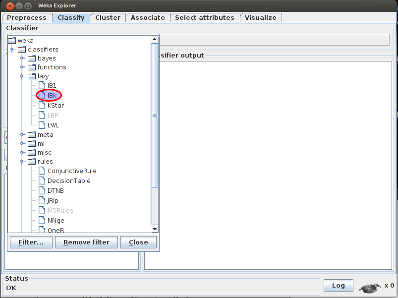
Choose “IBk.”
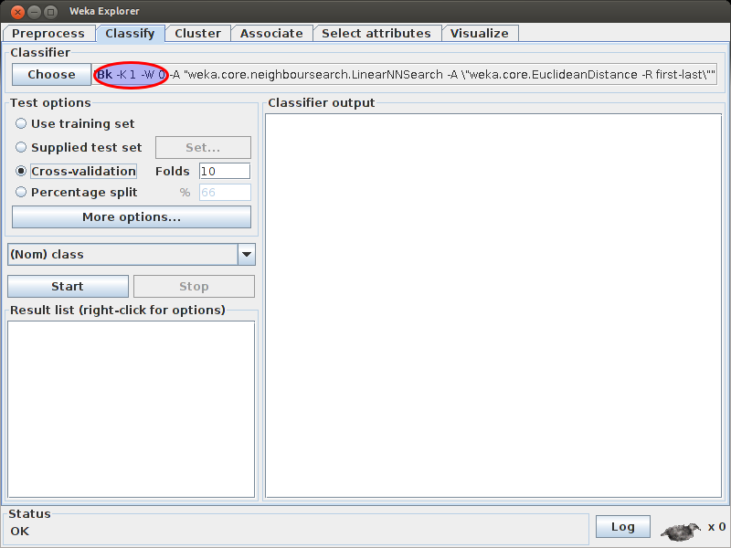
Click the name of the algorithm to get more options.
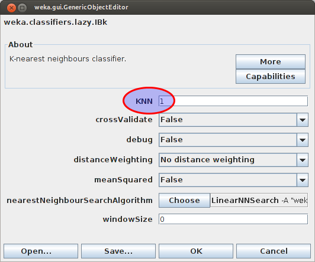
Possibly change the number of clusters.
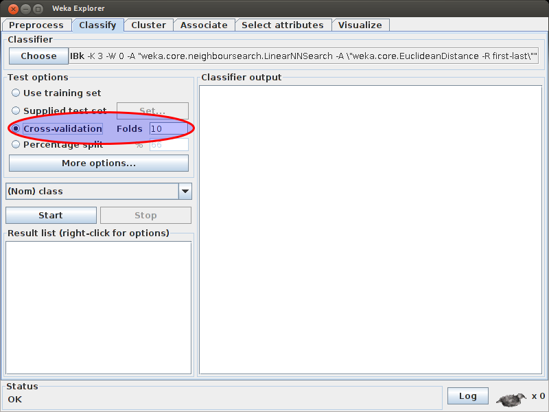
For evaluation (including the confusion matrix), choose “Cross-validation” with 10 folds.
Preprocessing text
As discussed in the text classification notes, text files typically need to be converted into “feature vectors” before machine learning algorithms can be applied. The most common feature vector is a vector where each dimension is a different word, and the value in that dimension is either 0/1 binary value (yes or no the word is in that document), an integer count (the frequency of the word in that document), or a real value (often the tf-idf score of that word in that document).
The ARFF files we will be working with will always look like this:
@relation some-description-of-the-data
@attribute contents string
@attribute class {ham,spam}
@data
'Go until jurong point, crazy.. Available only in bugis n great world la e buffet... Cine there got amore wat...',ham
'Ok lar... Joking wif u oni...',ham
'Free entry in 2 a wkly comp to win FA Cup final tkts 21st May 2005. Text FA to 87121 to receive entry question(std txt rate)T&Cs apply 08452810075over18s',spam
'U dun say so early hor... U c already then say...',ham
'Nah I dont think he goes to usf, he lives around here though',ham
...
Of course, the classes (ham/spam) may change. These files are very easy to generate, should you actually wish to use text classification for your own purposes.
We’ll practice with the sms-spam.arff file, which has examples of SMS text msg ham and spam.
Strings to binary feature vectors
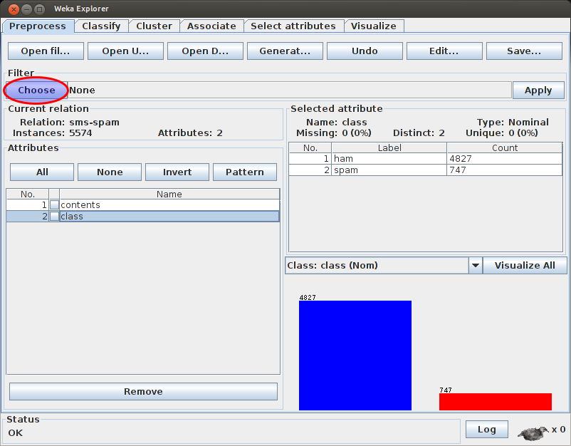
Load the ARFF file and choose a filter.
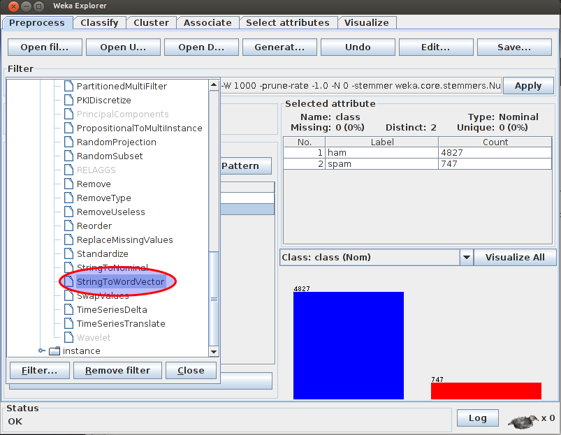
Choose the StringToWordVector filter, in the Unsupervised > Attribute section.
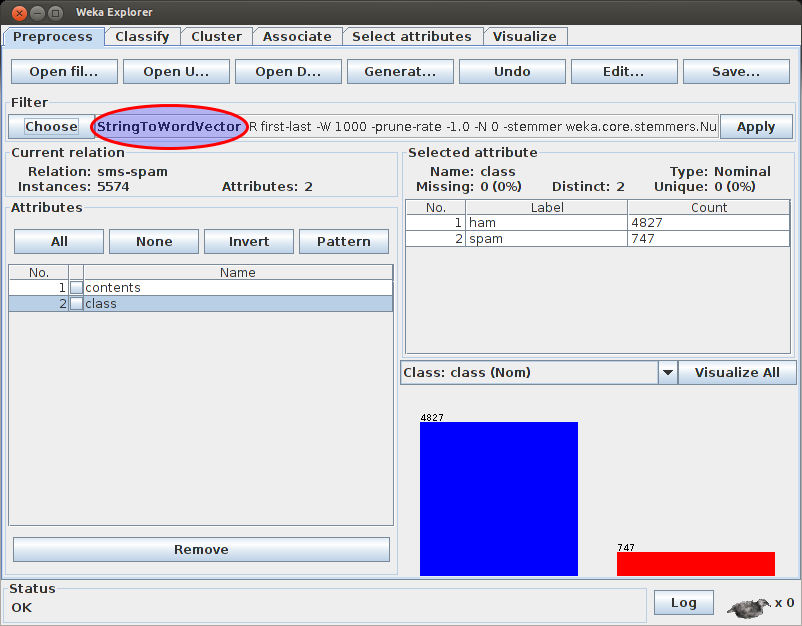
Click the filter name to get more options.
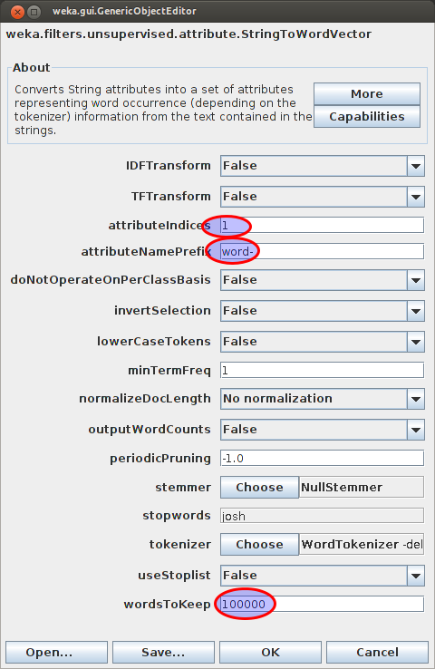
Change “attributeIndices” to “1” to just select the first attribute (the contents of the SMS message). Change “attributeNamePrefix” to “word-” so that all the new features look like “word-foo” and “word-bar”, etc. Change “wordsToKeep” to “100000” to keep them all.
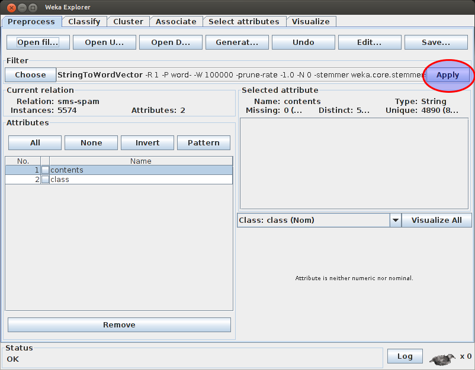
Click “Apply”
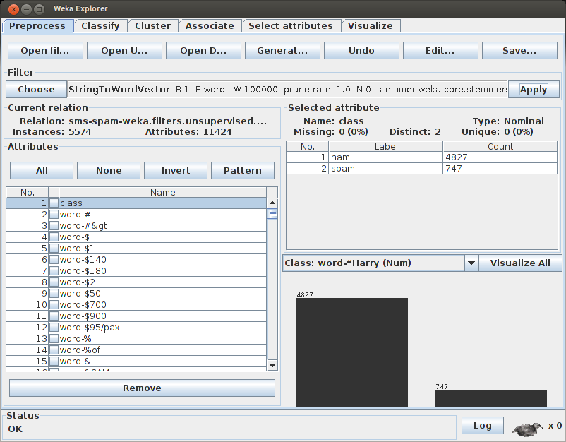
Now you’ll have lots more attributes. You can click “Undo” if you don’t like it.
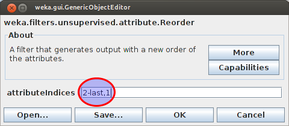
Everything works better if the class (ham/spam) is last. After our filter, it’s not anymore. Let’s fix that. Choose a new filter, “Reorder,” under Unsupervised > Attribute. Click the filter name to change its properties. Type “2-last,1” to make the new order the second-to-last attributes followed by the first attribute. This puts the first attribute at the end.
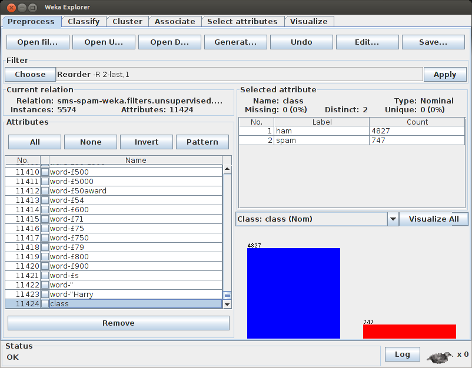
Click “Apply.” Now the class (ham/spam) should be the last attribute again.
Strings to frequency vectors
Follow the steps above (“Strings to binary feature vectors”) except use the following changes in the StringToWordVector filter:
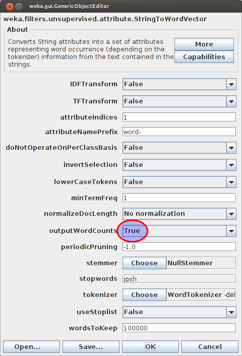
Change “outputWordCounts” to “True.”
Strings to tf-idf vectors
Follow the steps above (“Strings to binary feature vectors”) except use the following changes in the StringToWordVector filter:
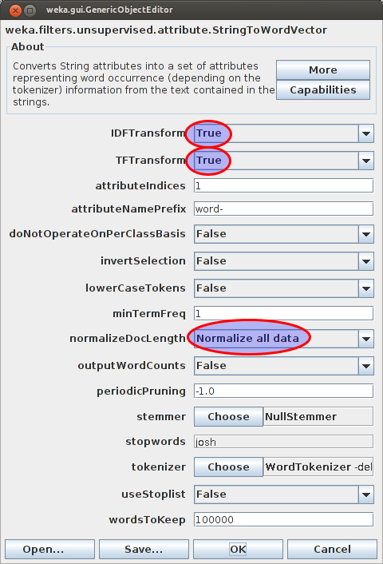
Change “IDFTransform” to “True” and “TFTransform” to “True,” as well as “normalizeDocLength” to “Normalize all data.”